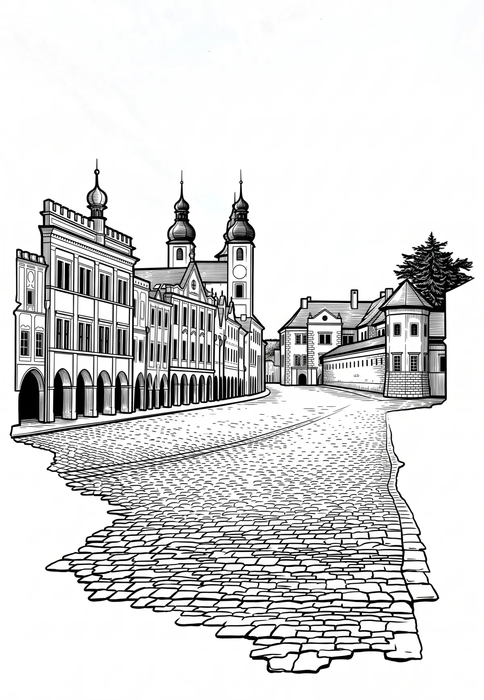

Telč
Telč (německy Teltsch, latinsky Telcz) je město na jihozápadě Moravy v okrese Jihlava v Kraji Vysočina. Leží 25 kilometrů jihozápadně od Jihlavy. Žije zde přibližně 5 100 obyvatel. Historické jádro Telče je městskou památkovou rezervací a je zapsáno na Seznam světového kulturního dědictví UNESCO.
Více na Wikipedii